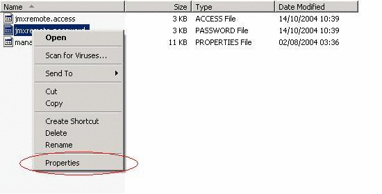
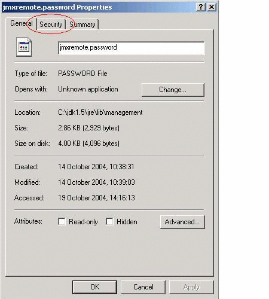
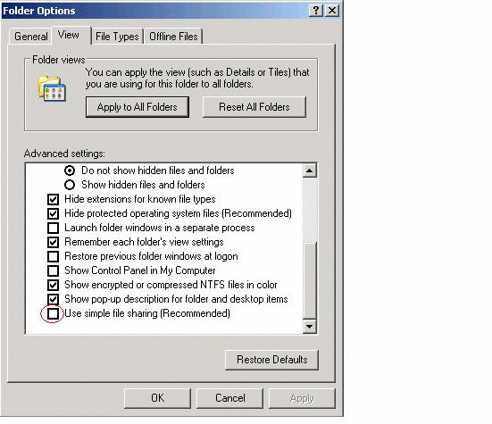
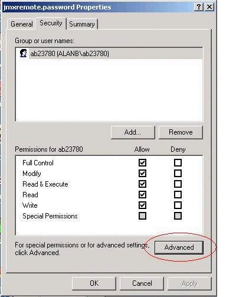
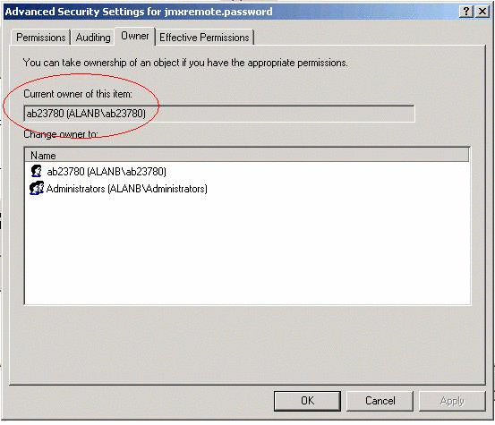
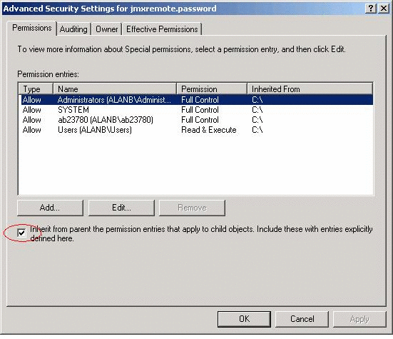
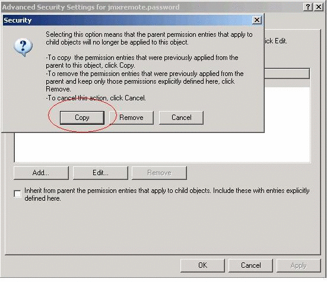
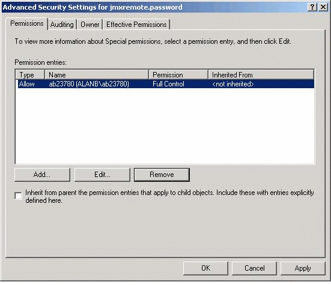
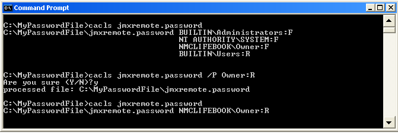

전의 항목
전의 항목Microsoft Windows 용의 시큐리티 정보의 상세
Microsoft Windows 시스템상에서 패스워드 파일을 보호하는 방법
원격 감시 및 관리에서는, 패스워드와 액세스 파일을 사용해, 시큐리티를 제어합니다. 제 2 장 「JMX 테크놀러지를 사용하는 감시와 관리」 의 「패스워드와 액세스 파일의 사용」에 Solaris 와 Linux 플랫폼을 대상으로 해 패스워드 파일에 대한 파일의 액세스권의 할당 방법이 기재되어 있습니다.
이 부록에서는, Windows 시스템에 대해 New Technology File System (NTFS)를 사용해 패스워드 파일의 액세스권을 설정해, 소유자만이 그 패스워드 파일로 읽어내 권 및 기입해 권을 가지도록(듯이) 하는 방법을 설명합니다. 파일 시스템이 File Allocation Table (FAT) 32 시스템의 경우는, 이 파일 시스템용으로 시큐리티가 지원되지 않고, 패스워드 파일을 시큐리티 보호할 수 없습니다.
패스워드 파일의 보호는, 각각 다른 버젼의 Windows XP 마다 실시합니다. 이 부록에는, Windows XP Professional Edition 와 Windows XP Home Edition 의 양쪽 모두를 대상으로 한 해결 방법이 기재되어 있습니다.
 Windows XP Professional Edition 상에서 패스워드 파일을 보호하는 방법
Windows XP Professional Edition 상에서 패스워드 파일을 보호하는 방법
다음에 나타내는 순서는, Windows XP Home Edition 는 대상으로 하고 있지 않습니다. 이것은, 파일의 액세스권을 그래피컬하게 변경할 수 없기 때문입니다. 해결 방법에 대해서는, 다음의 Windows XP Home Edition 상에서 패스워드 파일을 보호하는 방법을 참조해 주세요.
주: Windows XP Home Edition 상에서 패스워드 파일을 보호하는 방법으로 설명하는 cacls 커멘드를 사용한 해결 방법은, 그래피컬 인터페이스 대신에 커멘드행으로서 Windows XP Professional Edition 상에서도 사용할 수 있습니다.
Windows 익스플로러로,jmxremote.password 파일이 포함되고 있는 디렉토리로 이동합니다.
jmxremote.password 파일을 오른쪽 클릭해, 「프롭퍼티」옵션을 선택합니다.
「시큐리티」탭을 선택합니다.
Windows XP Professional Edition 를 사용해, 컴퓨터가 도메인에 포함되지 않은 경우는, 「시큐리티」탭이 자동 표시되지 않습니다. 「시큐리티」탭을 표시하려면 , 다음의 순서를 실행할 필요가 있습니다.
Windows 익스플로러를 열어, 「툴」메뉴로부터 「폴더 옵션」을 선택합니다.
「표시」탭을 선택해, 「상세 설정」의 스크롤 바를 최하 위치까지 이동시켜, 「간이 파일의 공유를 사용한다 (추천)」체크 박스의 체크를 오프로 합니다.
「OK」를 클릭해 변경을 적용합니다.
Windows 익스플로러를 재기동합니다.
「시큐리티」탭이 표시되게 됩니다.
「시큐리티」탭으로 「상세 설정」버튼을 클릭합니다.
「소유자」탭을 선택해, 파일의 소유자가 Java VM 를 실행하는 사용자와 일치하고 있는 것을 확인합니다.
「액세스 허가」탭을 선택해, 액세스권의 설정을 실시합니다.
파일에의 액세스권을 소유자 이외의 사용자나 그룹에도 허가하는 부모 디렉토리로부터 상속한 액세스권 엔트리가 존재하는 경우, 「아이 객체에 적용하는 액세스 허가 엔트리를 부모로부터 상속해, 그것들을 여기서 명시적으로 정의되고 있는 것에 포함한다」체크 박스의 체크를 오프로 합니다.
상속된 액세스권을 부모로부터 카피하는지, 또는 상속된 액세스권을 삭제할까를 묻는 다이알로그 박스가 표시됩니다. 「카피」버튼을 클릭합니다.
파일의 소유자 이외의 사용자나 그룹에 액세스권을 부여하는 액세스권 엔트리를 모두 삭제합니다.
파일의 소유자를 제외한 모든 사용자 및 그룹을 선택해 「삭제」버튼을 클릭하는 것으로써, 삭제 처리를 실행합니다.
소유자에 대해서 전권한을 부여하는 단일의 액세스권 엔트리가 등록되었습니다.
「OK」를 클릭해 파일의 시큐리티의 변경을 적용합니다.
패스워드 파일은 현재 안전한 상태에 있어, 소유자만이 이 파일에 액세스 가능해지고 있습니다.
jmxremote.password 의 「프롭퍼티」다이얼로그로 「OK」를 클릭합니다.
Windows XP Home Edition 상에서 패스워드 파일을 보호하는 방법
전술한 것처럼, Windows XP Home Edition 에서는, 파일의 액세스권을 그래피컬하게 설정할 수 없습니다. 다만,cacls 커멘드를 사용하면 액세스권의 설정을 실행할 수 있습니다.
「커멘드 prompt」윈도우를 엽니다.
다음의 커멘드를 실행합니다.
C:\MyPasswordFile>cacls jmxremote.password
이 커멘드에서는,jmxremote.password 파일의 액세스 콘트롤 리스트 (ACL)를 표시합니다.
대상이 되는 사용자명에만 읽어내 액세스권이 부여되도록(듯이) 액세스권을 설정합니다.
컴퓨터상에 사용자가 등록되지 않은 경우, 디폴트의 사용자명은 일반적으로 Owner 인가,Owner 를 로컬라이즈 한 이름이 됩니다.
C:\MyPasswordFile>cacls jmxremote.password /P Owner:R
이 커멘드에서는, 읽기 전용 허가가 주어지고 있는 사용자 Owner 에 액세스권을 부여합니다. 여기서,Owner 는,jmxremote.password 파일의 소유자입니다.
ACL 를 재차 표시합니다.
C:\MyPasswordFile>cacls jmxremote.password
이 시점에서, Owner 에만, 패스워드 파일에의 액세스권이 부여되고 있는 것을 알 수 있습니다.
